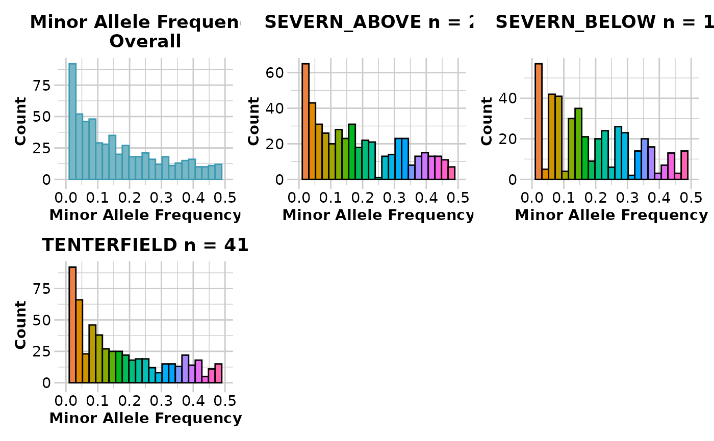

Reports minor allele frequency (MAF) for each locus in a SNP dataset
Source:R/gl.report.maf.r
gl.report.maf.RdThis script provides summary histograms of MAF for each
population in the dataset and an overall histogram to assist the decision of
choosing thresholds for the filter function gl.filter.maf
Usage
gl.report.maf(
x,
maf.limit = 0.5,
ind.limit = 5,
plot.out = TRUE,
plot_theme = theme_dartR(),
plot_colors_pop = discrete_palette,
plot_colors_all = two_colors,
bins = 25,
save2tmp = FALSE,
verbose = NULL
)Arguments
- x
Name of the genlight object containing the SNP data [required].
- maf.limit
Show histograms MAF range <= maf.limit [default 0.5].
- ind.limit
Show histograms only for populations of size greater than ind.limit [default 5].
- plot.out
Specify if plot is to be produced [default TRUE].
- plot_theme
Theme for the plot. See Details for options [default theme_dartR()].
- plot_colors_pop
A color palette for population plots [default discrete_palette].
- plot_colors_all
List of two color names for the borders and fill of the overall plot [default two_colors].
- bins
Number of bins to display in histograms [default 25].
- save2tmp
If TRUE, saves any ggplots and listings to the session temporary directory (tempdir) [default FALSE].
- verbose
Verbosity: 0, silent or fatal errors; 1, begin and end; 2, progress log ; 3, progress and results summary; 5, full report [default NULL, unless specified using gl.set.verbosity].
Details
The function gl.filter.maf will filter out the
loci with MAF below a specified threshold.
Function's output
The minimum, maximum, mean and a tabulation of MAF quantiles against thresholds rate are provided. Output also includes a boxplot and a histogram.
This function reports the MAF for each of several quantiles. Quantiles are partitions of a finite set of values into q subsets of (nearly) equal sizes. In this function q = 20. Quantiles are useful measures because they are less susceptible to long-tailed distributions and outliers.
Plots and table are saved to the temporal directory (tempdir) and can be
accessed with the function gl.print.reports and listed with
the function gl.list.reports. Note that they can be accessed
only in the current R session because tempdir is cleared each time that the
R session is closed.
Examples of other themes that can be used can be consulted in
See also
gl.filter.maf, gl.list.reports,
gl.print.reports
Other report functions:
gl.report.bases(),
gl.report.callrate(),
gl.report.diversity(),
gl.report.hamming(),
gl.report.heterozygosity(),
gl.report.hwe(),
gl.report.ld.map(),
gl.report.locmetric(),
gl.report.monomorphs(),
gl.report.overshoot(),
gl.report.pa(),
gl.report.parent.offspring(),
gl.report.rdepth(),
gl.report.reproducibility(),
gl.report.secondaries(),
gl.report.sexlinked(),
gl.report.taglength()
Author
Custodian: Arthur Georges (Post to https://groups.google.com/d/forum/dartr)
Examples
gl <- gl.report.maf(platypus.gl)
#> Starting gl.report.maf
#> Processing genlight object with SNP data
#> Warning: data include loci that are scored NA across all individuals.
#> Consider filtering using gl <- gl.filter.allna(gl)
#> Starting gl.report.maf
#>
#> Reporting Minor Allele Frequency (MAF) by Locus
#> No. of loci = 1000
#> No. of individuals = 81
#> Minimum : 0.00617284
#> 1st quantile : 0.03797468
#> Median : 0.1125
#> Mean : 0.1589901
#> 3r quantile : 0.2531646
#> Maximum : 0.5
#> Missing Rate Overall: 0.07
#>

#> Quantile Threshold Retained Percent Filtered Percent
#> 1 100% 0.50000000 1 0.2 640 99.8
#> 2 95% 0.44444444 34 5.3 607 94.7
#> 3 90% 0.39102564 65 10.1 576 89.9
#> 4 85% 0.34375000 97 15.1 544 84.9
#> 5 80% 0.29375000 129 20.1 512 79.9
#> 6 75% 0.25316456 161 25.1 480 74.9
#> 7 70% 0.21875000 193 30.1 448 69.9
#> 8 65% 0.18750000 225 35.1 416 64.9
#> 9 60% 0.16049383 257 40.1 384 59.9
#> 10 55% 0.13580247 292 45.6 349 54.4
#> 11 50% 0.11250000 322 50.2 319 49.8
#> 12 45% 0.09259259 360 56.2 281 43.8
#> 13 40% 0.08024691 392 61.2 249 38.8
#> 14 35% 0.06250000 418 65.2 223 34.8
#> 15 30% 0.05000000 450 70.2 191 29.8
#> 16 25% 0.03797468 481 75.0 160 25.0
#> 17 20% 0.03086420 513 80.0 128 20.0
#> 18 15% 0.01851852 554 86.4 87 13.6
#> 19 10% 0.01234568 585 91.3 56 8.7
#> 20 5% 0.00625000 610 95.2 31 4.8
#> 21 0% 0.00617284 641 100.0 0 0.0
#> Completed: gl.report.maf
#>